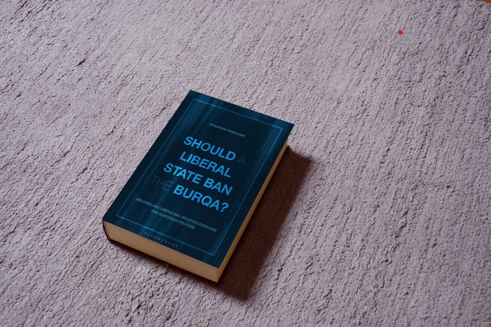
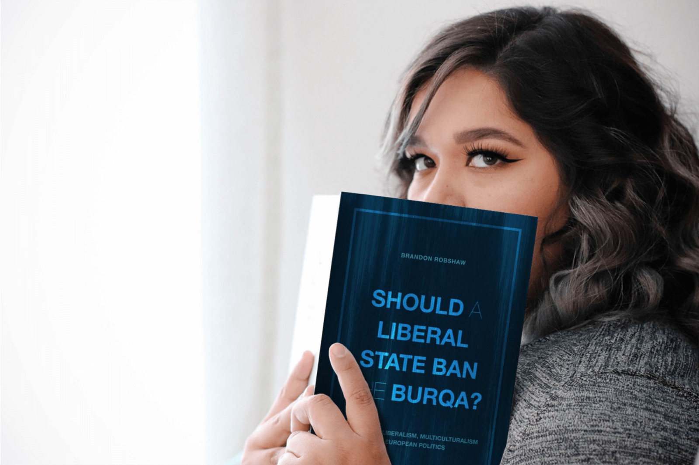

Should a Liberal State Ban the Burqa?
Book review
If you like reading about philosophy, here's a free, weekly newsletter with articles just like this one: Send it to me!
A very clear, instructive and carefully argued book that shows off applied philosophy at its best.

Is it morally right for liberal states to ban the wearing of Islamic dress that covers the face of the (female) wearer? And if so, for which precise reasons would such a ban be defensible?
The question is surely one that most of us have discussed with others at some point. When France banned the wearing of the burqa on French territory in 2010, a heated debate followed. Obviously, Muslims would be opposed to the ban – but even non-Muslims often rejected the measure and many of its possible justifications.
Things are not as easy as they may seem. The wearing of the burqa (and its ban) touch on a number of pretty complicated philosophical problems.

For one, of course, there is the issue of gender equality and the freedom of Muslim women to wear whatever they like. Strangely perhaps for the Western observer, it turned out that many Muslim women reported that they would actually voluntarily choose to wear a burqa. But if this is the case, then how can a state committed to individual freedom justify taking just this freedom away from Muslim women?
One could try to argue that the Muslim women who would like to go on wearing the burqa might not have been entirely free in their choice. Perhaps they only accept the dress under the pressure of their culture, their religion, or other family members. And such pressure might even work subconsciously – the women affected might not even realise that they are not freely choosing and that they are instead the victims of a subtle ploy to restrict their freedoms, a ploy that included their early childhood education and the values that society and religion passed on to them.
But then, one might ask, is it the job of the state to solve such issues with a blanket ban on the wearing of this type of dress? Should the state assume the paternalistic stance of forcing women to expose their faces, even if they don’t want to, in the name of some “higher order” freedom? And if I want to cover my face for any reason, shouldn’t this be something that concerns only me?
Thinking through these problems leads to complex questions that require weighing superficial freedom of choice against perhaps a “deeper” freedom of choosing one’s values. Or weighing the preferences of those who genuinely want to cover their faces against the interests of a society that wants its citizens to socialise in the open. And the issues soon expand from there to cover all sorts of fascinating questions involving freedom, dignity, gender equality and what it means to live together in a modern, liberal society.
Style of the book
Throughout the book, the author Brandon Robshaw stays firmly with a liberal point of view. He already assumes, for example, that the burqa-wearing will be voluntary rather than enforced:
Up until Chapter 11, I shall be assuming that the wearing of the burqa is voluntary. That is because I take it as a given that liberals would naturally be against coerced burqa-wearing. It is voluntary burqa-wearing that makes for the liberal dilemma.
This is refreshing to see, because all too often nowadays, someone on one side of an argument will use every rhetoric trick available to benefit their own position, including straw man arguments and ad-hominem attacks.
Not so this book. The one thing that I found surprising, almost astonishing, and, as I read on, increasingly delightful, is how honest, fair and balanced the treatment of the question is. Robshaw is a very careful, very systematic, very lucid thinker, and he does not seem to have any agenda except to clarify his question, debating as many arguments as possible from all sides. He treats every argument with the care and impartiality of a judge, but without the legalistic tediousness that one would expect from lawyers.
The answer to the question of the book’s title comes already on page two, and this again is a wonderfully refreshing change from the click-bait assaulting us all over modern media: “The astonishing truth about burqa-wearing! Click here!” – This book, thankfully, is exactly the opposite: calm, lucid, thoughtful and clear. Robshaw:
The conclusion, which I am happy to disclose at this early stage, is that banning the burqa in a liberal state is unlikely to be justified. It could not be justified in terms of the welfare or autonomy of the individual who voluntarily wears it. It could only be justified on the grounds of harm to others. A ban might, for example, theoretically be justified if coerced wearing of the burqa were widespread. Such a ban would be regrettable, however, as it would override the free choice of those who wore it voluntarily. It would first be necessary to provide empirical evidence that such coercion was occurring; and any such ban could only be justified if there were no other, equally efficacious and better targeted means of preventing coercion. (p.2)
A short trip to the dark side
I assume that some of the virtues of the book, its systematic clarity, for example, or its argumentative hygiene, come from its origins as a PhD thesis at the Open University. In fact, one can download the 2018 or 2019 thesis (the cover page gives both years in different places) for free under a Creative Commons licence.
I’m not sure how happy Bloomsbury are about this (or if they are even aware of it), but with the publisher’s hardcover price of 120 USD (!) and a Kindle ebook price tag of 36 bucks, one could be forgiven if one read the original dissertation instead of paying through the nose for the actual book. I do understand the price mechanics of academic publishing to some extent, and most of the potential audience for such a book will get it either from a library or buy it with other people’s money – but still, the book is offered to the end user on Amazon (which is not where the libraries would purchase it from) at these prices which are, frankly, bordering on the obscene; particularly given that the work was already written as a dissertation and the author is not going to make a living selling the book to the masses (if he earns anything at all from the sales of this book). The parasitism of academic publishers, who cash in staggering amounts of money for, essentially, not adding anything to the work that legions of researchers submit to them print-ready and for free, has always appalled me.

One should perhaps also briefly mention the cover, which looks like it was made by a disgruntled employee in the short time between receiving their notice and having to vacate their desk. With some of the words set in a very thin font (blue on darker blue), from a distance it reads: “Should liberal state ban burqa?” which puzzles the reader: would the articles have cost the publisher extra? Is there perhaps an even more overpriced version of the work that includes the missing articles?
The colouring of the cover is (one must assume, on purpose) uneven, with parallel streaks of discolouration that look like the book has been rubbed against a wall a few times. A truly excellent book like this would have deserved a better cover, especially when sold on Amazon, where covers really count. After a decade and a half of large-scale self-publishing, traditional publishers must slowly awaken to the realities of a market that demands better from them, if they want to actually sell books. As it is, with covers and pricing structures like that, they just throw their authors under the bus, robbing them of the chance to reach anyone outside of their narrow academic audiences.
Structure and content
Robshaw begins his treatment with definitions: What is a liberal state? What is a burqa? Here already the difficulties begin. What kind of liberal state are we talking about? Is France comparable to the US and in what ways? What kind of dress should we consider? Is the relevant feature of a burqa that it hides the face, or is any scarf that partially covers the head already within the scope of our discussion? But the author is not going to be discouraged by such superficial difficulties. He immediately clarifies which kind of state he will be talking about (“the minimal requirements of liberalism from Jonathan Quong”) and which type of dress (“Both types of garments … cover women’s faces. That is the key point. Garments which cover only the hair, such as the hijab, are not relevant to my argument.”)
The book then follows an equally clear line of argumentation that tackles in a systematic way, one by one, the main issues:
- Chapter 2 analyses the French burqa-ban of 2010.
- Chapter 3, “the liberal position on habitual public face-covering per se.”
- Chapter 4 distinguishes between different kinds of liberalism, and
- Chapter 5 looks at the role of paternalism in the burqa-ban discussion.
- Chapter 6 examines personal autonomy arguments and
- Chapter 7 “adaptive preferences”: “If burqa-wearing is the result of a preference formed in response to social pressures and constraints, can it be said to be truly voluntary?”
- Chapter 8 is about multiculturalism and the burqa,
- Chapter 9 about “Gender and the burqa.”
- Chapter 10 considers the issues surrounding offensive behaviour: “Joel Feinberg’s Offence Principle: the principle that if a practice causes severe, prolonged and unavoidable offence to the senses or sensibilities, there would be liberal grounds for banning it.”
- And, finally, Chapter 11 asks if the wearing of the burqa could be said to cause harm to the wearer if it was not voluntary.
I don’t think that I’m giving away too much here if I quote the main points from the conclusion of the book, since the author himself writes already on page 10 what we’re going to learn:
- Assuming that burqa-wearing is voluntary, a burqa-ban would not be justified on liberal grounds, but it would be justifiable to require temporary removal in certain situations.
- But if a significant proportion of burqa-wearing is coerced, then a general ban would be justified, if no other equally efficacious means of preventing coercion could be found.
An example of clarity
The book is very easy to read, even without any background in political philosophy or legal studies. Robshaw explains all the relevant concepts as they appear in the discussion. For example, in chapter 5, where he talks about paternalism, he begins with a definition of paternalism and then presents and carefully explains four different arguments against paternalism, before clarifying the differences between weak and strong, soft and hard paternalism. Reading these analyses sometimes feels like one is learning the main concepts of political philosophy using the example of the burqa disputes, rather than reading an advanced scholarly treatment of the question: but this is, of course, the whole point of good academic writing. My own PhD adviser used to tell me that a good scholarly work should not be harder to read than an article in a Sunday culture magazine. Everything more complicated is, I understood him as saying, just a way for the author to hide their own ignorance and insecurity.
If one is really master of their topic, then one can afford to write simply and clearly. And this book is a very strong case for just that claim. Robshaw manages to make the reader feel intelligent, to make us feel that we understand the issues and that we can, after having read the book, make up our own minds about them. But we also feel that we can now really appreciate the complexity of the problems and use calm, rational thought to disentangle them, rather than having to resort to ideologically motivated attacks on the other side in order to score a point.
The ideal reader
Because of the way that Robshaw writes, carefully introducing and explaining all the background knowledge that one would need to follow his arguments, this book is almost an introductory text to applied political philosophy and ethics. A reader who comes largely unprepared to it, will learn a lot about recent events (e.g. the French burqa ban, its history and its legal facets), but also about more timeless topics, like the precise meanings of “liberal society,” “paternalism,” “first- and second-order autonomy” and much more. Robshaw introduces his readers to Oshana, Clare Chambers, Nussbaum, Dworkin and many other classics of the contemporary philosophical discussion on autonomy, without ever overwhelming them with jargon or references to material that is assumed to be known but never explained within his book.
Again, one sees here the origins of this work as a PhD dissertation: the author, trying to demonstrate his knowledge of the material to his examiners, goes on to explain every debate, every argument, every bit of background knowledge as clearly as possible. This is now of great value to the non-specialist readers of the book, since it allows them to easily follow these debates and to understand a lot more than what they would be able to gain from some other, more terse scholarly books.
At the same time, though, one never feels that the book is simplistic, or that it sacrifices depth for clarity. Every argument is carefully laid out, examined from all sides and connected to its context and to the larger debate. Even if one knows all the scholarly background and the relevant literature, the books still manages to arrange all the pieces of this complex argumentation in such a clear way that it is worth reading for this clarity alone.
Conclusion
I was very excited to receive this book to review, because its topic is so close to what we are often talking about here on Daily Philosophy: how to use philosophical thought to clarify the issues of our everyday lives in today’s societies.
It turned out that this book was even better than I had hoped: more clear, more readable, richer in its argumentation, and a lot more fun to read than the average scholarly work. I feel like this book could be given to interested non-philosophers as a present, to show them what good philosophy can be like (and should be like): a serious, honest, enlightening discussion of a real, relevant social issue that never gets tedious or boring, that never escapes into obscurity or prejudice and that always respects its reader and its topic.
If you are interested in seeing how philosophy can help us make sense of the problems of everyday life, this book is a really great example of that.

Brandon Robshaw (2020). Should a Liberal State Ban the Burqa? Reconciling Liberalism, Multiculturalism and European Politics. Bloomsbury Academic. 265 pages. ISBN (hardcover): 978-1-3501-2505-6.
“Should a Liberal State Ban the Burqa?”, is an excellent demonstration of how clear thinking and careful analysis can help us deal with the messy problems of today’s multicultural societies.
Amazon affiliate link. If you buy through this link, Daily Philosophy will get a small commission at no cost to you. Thanks!